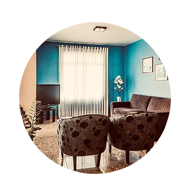

Seja Bem-Vindo ao Hotel Solaris.
Há aproximadamente 30 anos, nosso hotel em São Miguel do Oeste é a principal referência para viajantes no extremo-oeste de Santa Catarina. É um orgulho estar a sua disposição!
-
HOTELARIA
O Hotel Solaris conta com mais de 80 apartamentos nas categorias standard e luxo, sete suítes familiares e uma suíte master.
-
GASTRONOMIA
O café da manhã do Hotel Solaris atende a todos os paladares. À noite, o Restaurante Solaris oferece sabores elaborados em um ambiente descontraído.
-
EVENTOS
Com três áreas de eventos e localizado no centro histórico de São Miguel do Oeste, o Hotel Solaris é a opção ideal para grupos de todos os tamanhos.
Restaurante Solaris
Diariamente das 18h30min às 23h, o Restaurante Solaris atende a todos os paladares com gastronomia de requinte e bom gosto. Além de pratos quentes e frios feitos com ingredientes frescos e selecionados, dispomos de uma variada carta de cervejas e vinhos com rótulos nacionais e importados. Peça por telefone ou através do Club Food!
- 